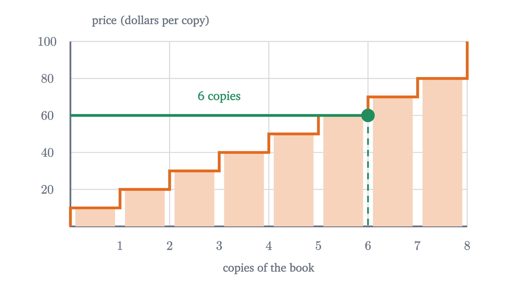
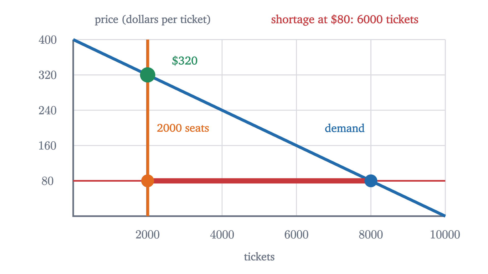

Supply and demand: where a price comes from
Line up buyers by what they would pay and sellers by what they would accept. The price where the two counts match is the one that leaves nobody turned away.
AssumesWhat slope means, and why y = mx + b is a lineSolving two equations at once: where lines meet
Tickets for a 2000-seat concert go on sale at $80 and are gone within a minute. By the afternoon the same seats are listed on resale sites at $320. People blame greed, or bots, or a ticketing website that buckled. There is a plainer diagnosis, and to reach it we need to know where a price comes from in the first place.
So leave the concert for a few minutes and take a market small enough to count on your fingers. A calculus course requires a particular textbook. Eight students need a used copy, and eight students who finished the course last term each have one to sell. The copies are in the same condition, so nobody cares which one they get. What will a copy sell for?
Eight buyers and what each would pay
Ask each buyer privately for the most she would pay before giving up and making do with the library copy.
| Buyer | Ana | Ben | Cho | Dev | Eli | Fay | Gus | Hoa |
|---|---|---|---|---|---|---|---|---|
| Would pay up to | $55 | $95 | $35 | $75 | $25 | $85 | $45 | $65 |
The number reflects her alternatives as much as her taste. Ben may be no keener on calculus than Eli; perhaps he has no time to sit in the library. All the model needs is the number itself.
Pause and try
If copies cost $60, which of the eight would buy? How many would buy at $30?
Show answerHide answer
At $60 the buyers are those willing to pay at least 60: Ben (95), Fay (85), Dev (75) and Hoa (65), so four copies. At $30 everyone buys except Eli (25), so seven copies.
Answering that question took a search through the table. Sorting the buyers from highest willingness to pay to lowest turns the search into reading a graph.
The two terms sound alike and mean different things, and a later section depends on the difference. “Quantity demanded” is a single number, such as 4 copies at $60. “Demand” is the entire staircase.
One oddity of the graph is a convention you will meet everywhere in economics: price goes on the vertical axis even though it is the input. To use the curve, start from a price on the left edge, move across until you hit the staircase, and read the quantity below.
Eight sellers and what each would accept
Each seller also has a private number: the lowest price she would take. Below it she would sooner keep the book. Call that her cost of selling. The eight sellers’ costs are $10, $20, $30, $40, $50, $60, $70 and $80, and a seller sells when the price is at or above her cost.

The quantity supplied $Q_s(p)$ is the number of units sellers want to sell at price $p$, and supply is the whole relationship. This staircase climbs, because a higher price satisfies more sellers.
Before putting the two staircases together, here is what has been assumed. Every statement that follows is a statement about this model.
- One homogeneous good. The copies are interchangeable, so only the price matters.
- Unit trades. Each buyer wants one copy and each seller has one.
- Price-taking. There is one going price, and each person decides only whether to trade at it. Nobody thinks she can move it alone.
- Everything else fixed. Willingness to pay and costs stay put while we vary the price. Economists say ceteris paribus, “other things equal”.
- Voluntary trade. Nobody can be made to buy or sell.
The price at which the two counts agree
Pause and try
Someone posts a notice: “used calculus books, $30 each”. Count the buyers who want a copy at that price and the sellers willing to part with one. Who ends up disappointed? Then look for a price at which nobody would be.
Show answerHide answer
At $30, seven buyers want a copy (all but Eli) and three sellers are willing (costs 10, 20, 30). Only three trades can happen, so four buyers who wanted a book at $30 go without. At $50 the willing buyers are Ben, Fay, Dev, Hoa and Ana, and the willing sellers are those with costs 10 to 50: five and five. Any price from $50 to $55 gives the same two lists.
| Price | $20 | $30 | $40 | $50 | $60 | $70 | $80 |
|---|---|---|---|---|---|---|---|
| Quantity demanded | 8 | 7 | 6 | 5 | 4 | 3 | 2 |
| Quantity supplied | 2 | 3 | 4 | 5 | 6 | 7 | 8 |
| Copies traded | 2 | 3 | 4 | 5 | 4 | 3 | 2 |
The last row is the smaller of the two above it. Since nobody can be forced to trade, the scarcer side decides how many trades happen. Trade is largest at $50, the one column in which the counts agree.
A price of $30 would not last, because four buyers are shut out, and at least one of them is willing to pay $65 or more, because only three of the seven hopefuls (Ana, Gus and Cho) have a willingness to pay below that. Say it is Hoa. She would gladly pay $45 to the seller whose cost is $40, and that seller would gladly accept. Both are better off than under the posted price, where neither trades. So the $30 price is broken by a buyer who offers more. At $72 the pressure runs the other way. Four willing sellers find no buyer, and at least one of them has a cost of $40 or less. She offers her copy for $60, and Hoa, who would not pay $72, takes it. At $52 no such deal exists. The buyers left out value the book at $45 or less, the sellers left out need $60 or more, and no price pleases both.
What we noticed in the table holds for any lists of numbers.
Match the parts to the book market. There $q^* = 5$, because $v_5 = 55 > c_5 = 50$ while $v_6 = 45 < c_6 = 60$. Part 2 is the four disappointed buyers at $30. Part 3 is Hoa and the $40 seller: at any price below $c_5 = 50$ fewer than five sellers are willing, at any price above $v_5 = 55$ fewer than five buyers are, and in both cases a trade that would help two people goes unmade.
Be clear about the status of these claims. The theorem compares prices; it is arithmetic inside the model and it is proved. The claim that real prices move to the clearing level is a claim about behavior, and the model contains no mechanism for it. The Hoa story makes it plausible. The evidence is experimental. In classroom markets that Vernon Smith reported in 1962, and in many repetitions since, students were given private values and costs like our table and allowed to call out bids and offers, and trading prices typically settled near the clearing price within a few rounds.
From staircases to curves
Eight buyers left a $5 range of clearing prices. That slack is an artifact of the small numbers.
With 800 traders on each side the staircases are, to within a few cents, the straight lines
where $P$ is the price in dollars and quantities are copies per term. The coefficients are slopes: each extra dollar on the price loses 10 buyers and brings in 10 sellers. This is why economists draw demand and supply as smooth curves. A curve is a staircase with too many steps to see.
A change in demand is not a change in quantity demanded
Next term the course enrolls more students, and at every price 200 more copies are wanted than before. Nothing about the sellers has changed.
Pause and try
The new demand is $Q_d = 1200 - 10P$ and supply is still $Q_s = 10P$. Find the new clearing price and quantity. Did the quantity supplied change? Did supply?
Show answerHide answer
$1200 - 10P = 10P$ gives $P = 60$ and $Q = 600$. The quantity supplied rose from 500 to 600 copies, because the higher price satisfies 100 more sellers. Supply, the relationship $Q_s = 10P$, is exactly what it was.
Here the distinction from earlier does its work.
The rise in enrollment was a change in demand. It caused a change in price, which caused a change in quantity supplied. Each curve answers “what if only the price changed?”, so a price change can never shift either of them.
A price ceiling
Suppose the student union, wanting books to be affordable, rules that no used copy may sell for more than $30.
Pause and try
In the campus market, how many copies are wanted at $30, and how many are offered? How many students who would have bought a book at the clearing price of $50 now cannot get one?
Show answerHide answer
$Q_d = 1000 - 300 = 700$ and $Q_s = 300$. There is a shortage of 400 copies. Only 300 copies trade. Of the 500 students who would have bought at $50, at least 200 go without, and more than 200 if some of the 300 copies go to students outside that group. Trade has fallen by 200 copies even though 200 more students now want one.
The 300 students who get a book pay $20 less than before, and they are better off. But the price no longer decides who those 300 are. Something else has to: who saw the notice first, who knows a seller, who is willing to slip the seller an extra $20. And since fewer than $q^* = 500$ trades take place, part 3 of the theorem applies. Some student who would pay more than $50 has no book while an owner who would sell for $35 keeps hers, and the rule forbids the trade that would help both.
Now return to the concert. The hall has 2000 seats whatever the price, so supply is a vertical line. Suppose the number of tickets fans want is $Q_d = 10000 - 25P$.

So nothing broke. A price set well below the clearing level produces a shortage as a matter of arithmetic, and a shortage produces a scramble and a second market. The demand numbers here are invented to fit the story, and the model is silent on why a promoter would choose $80. Loyalty to fans, fear of looking greedy and the hope of selling merchandise have all been proposed, and deciding among them takes evidence.
What the model leaves out
Each assumption fails somewhere. Used cars are not homogeneous, and a buyer who cannot judge quality behaves differently from Ben. A town with one employer or one pharmacy has a trader who sets the price and knows it. And “other things equal” is a discipline: every prediction has the form “if only this changes, then that follows”. The model is also silent about whether a clearing price is fair. Eli, who could pay only $25, has no book at $52, and whether that is acceptable is a question the arithmetic cannot answer.
Check yourself
A frost in Brazil raises the price of coffee. Tea is a substitute for coffee. In the market for tea, what happens?
The hard part of this lesson was keeping a number apart from a curve. A price selects one point on each curve, a clearing price is where those points coincide, and events outside the market move a whole curve and drag the crossing point with it. The next lesson asks how strongly quantity responds to price, which decides whether a seller who raises her price ends up with more revenue or less.
Problems
The first three repeat the lesson’s moves, the next three combine them, and the last two ask for an argument.
Problem 1
Five buyers would pay up to $12, $10, $9, $7 and $4 for a concert poster. Five sellers would accept no less than $3, $5, $6, $8 and $11. Find $q^*$, the quantity demanded and supplied at $7.50, and all market-clearing prices.
Show solutionHide solution
Compare in order: $12 > 3$, $10 > 5$, $9 > 6$, but $7 < 8$. So $q^* = 3$. At $7.50 the willing buyers are those at 12, 10 and 9, and the willing sellers are those at 3, 5 and 6, so $Q_d = Q_s = 3$ and $7.50 clears the market. The counts stay at three and three for every price above 7 and below 8. At exactly $7 the fourth buyer is also willing ($Q_d = 4$), and at exactly $8 the fourth seller is ($Q_s = 4$), so the clearing prices are those strictly between $7 and $8.
Problem 2
Demand for a brand of notebook is $Q_d = 600 - 20P$ and supply is $Q_s = 40P - 120$, with $P$ in dollars and quantities in notebooks per week. Find the equilibrium.
Show solutionHide solution
Set $600 - 20P = 40P - 120$. Then $720 = 60P$, so $P = 12$, and $Q = 600 - 240 = 360$. Check with supply: $40 \times 12 - 120 = 360$.
Problem 3
In the notebook market of the previous problem, a ceiling of $9 is imposed. Find the shortage and the number traded. What would a ceiling of $15 do?
Show solutionHide solution
At $9, $Q_d = 600 - 180 = 420$ and $Q_s = 360 - 120 = 240$. The shortage is 180 notebooks and 240 are traded, down from 360. A ceiling of $15 is above the clearing price of $12, so it is not binding and the market stays at $12 and 360.
Problem 4
For each event, say whether it is a change in demand, in quantity demanded, in supply or in quantity supplied in the used-textbook market: (a) the professor makes the book optional; (b) the price falls from $50 to $45 and more students buy; (c) a campus bookstore starts paying $10 more for returned copies, so owners are less eager to sell to students; (d) after (a), fewer owners bother to sell.
Show solutionHide solution
(a) A change in demand: fewer copies are wanted at every price, so the curve shifts left. (b) A change in quantity demanded: a movement along the demand curve caused by the book’s own price. (c) A change in supply: every owner’s cost of selling to a student rises, so fewer are offered at each price and the curve shifts left. (d) A change in quantity supplied: the fall in demand lowers the price, and sellers move down along an unchanged supply curve.
Problem 5
A price floor is a legal minimum price. In the campus market ($Q_d = 1000 - 10P$, $Q_s = 10P$), a floor of $70 is imposed. Find the quantity traded and the excess supply. Who is left disappointed?
Show solutionHide solution
At $70, $Q_d = 1000 - 700 = 300$ and $Q_s = 700$. Buyers are the scarcer side, so 300 copies trade and the excess supply is 400. The disappointed are 400 owners willing to sell at $70 who find no buyer. Trade is 300, the same as under the $30 ceiling: a price on either side of $50 reduces trade, because one side or the other withdraws.
Problem 6
In the campus market, enrollment adds 200 buyers at every price and, in the same term, a graduating class adds 200 sellers at every price. Find the new equilibrium and explain why the direction of the price change could not have been predicted from the directions of the shifts alone.
Show solutionHide solution
The new curves are $Q_d = 1200 - 10P$ and $Q_s = 10P + 200$. Setting them equal, $1000 = 20P$, so $P = 50$ and $Q = 700$. The price is unchanged and the quantity is up by 200. More demand pushes the price up, more supply pushes it down, and here the two pushes are equal. If supply had risen by 100 instead, $1100 = 20P$ gives $P = 55$; if by 300, $P = 45$. Both shifts raise the quantity, so that direction is certain, but the price depends on their sizes.
Problem 7
A newspaper writes: “Rents rose this year because of higher demand for apartments. But as rents rise, demand will fall, and so rents will soon come back down.” Find the error and say what the supply and demand model predicts.
Show solutionHide solution
The first sentence describes a shift of the demand curve to the right. The second uses “demand will fall” for the response of renters to a higher price, which is a fall in quantity demanded along the new curve. That movement is already part of the adjustment to the new crossing point; it does not shift the curve back. The model predicts that rents stay at the new, higher level until something else changes, for instance new building, which would be a shift in supply.
Problem 8
In the eight-student market, the price is capped at $30 and the three sellers with costs 10, 20 and 30 sell. Define the gain from a trade as the buyer’s willingness to pay minus the seller’s cost. (a) Find the total gain if the three books go to Ben, Fay and Dev. (b) Find it if they go to Ana, Gus and Cho. (c) Find the total gain at a clearing price. (d) In case (b), describe a resale that benefits both parties.
Show solutionHide solution
The three sellers’ costs total $10 + 20 + 30 = 60$. (a) $95 + 85 + 75 - 60 = 195$. (b) $55 + 45 + 35 - 60 = 75$. (c) At a clearing price the five highest-value buyers trade with the five lowest-cost sellers: $(95 + 85 + 75 + 65 + 55) - (10 + 20 + 30 + 40 + 50) = 375 - 150 = 225$. The price itself does not appear, because what the buyer pays the seller receives. (d) Cho values her copy at $35 and Ben would pay $95. If Ben buys it from her for $60, she gains $25 and he gains $35 compared with not trading. That resale is the concert’s secondary market in miniature, and it moves the total from the outcome in (b) toward the one in (a). Even (a) falls short of 225, because under the cap only three books change hands.